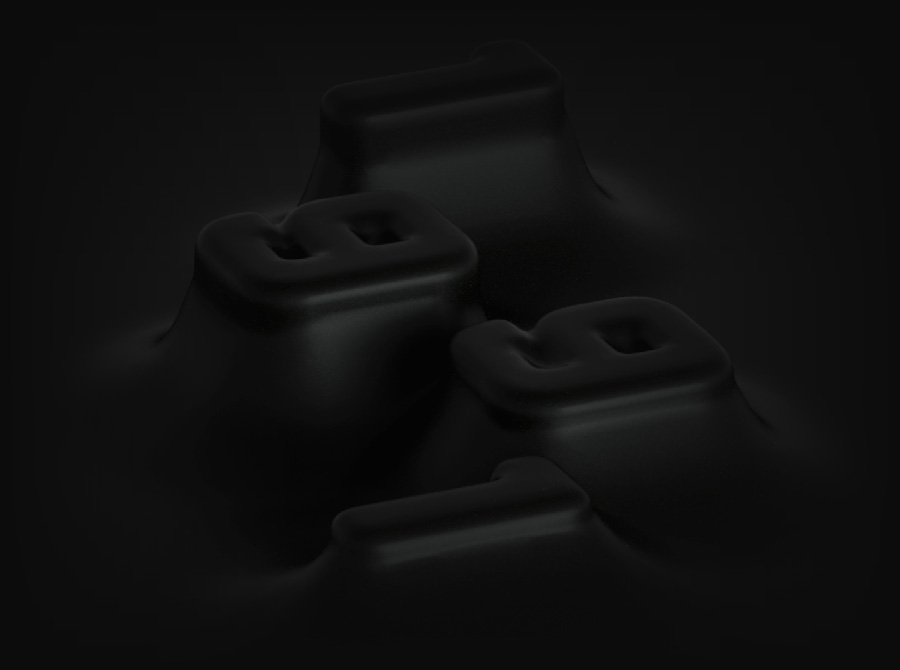
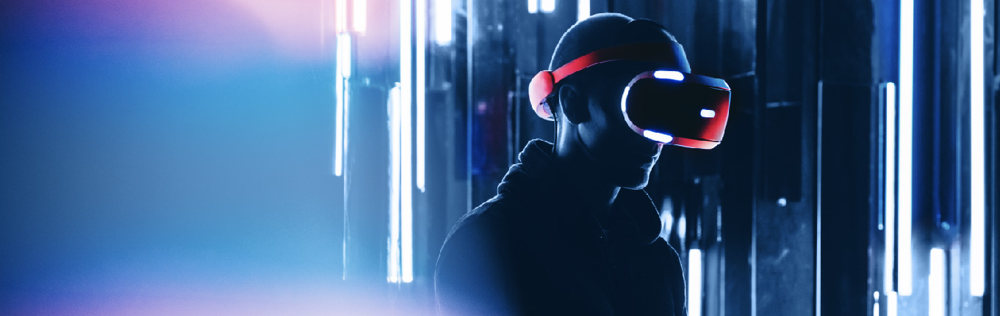
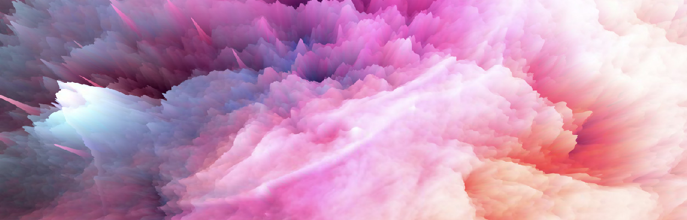
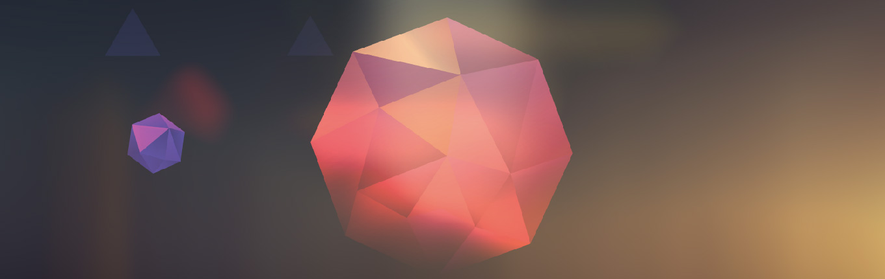
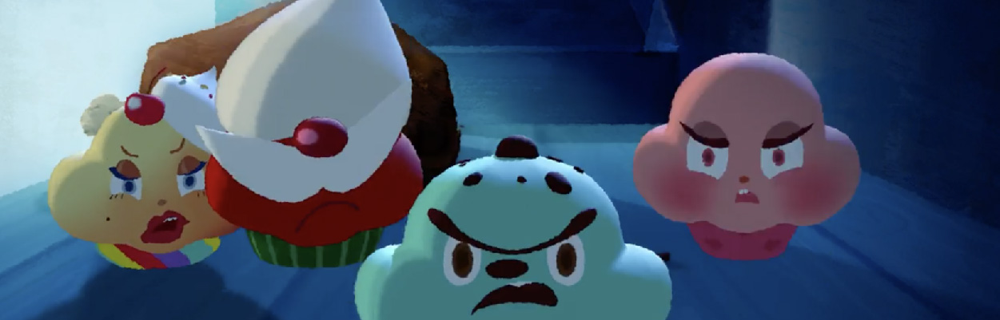

다양한 사회적 목적을 가진 사람들에게 시각적으로 효과적일 뿐만 아니라
총체적인 마케팅 방향 선정에 있어서 디자인적 컨셉을 제시하는 등
브랜딩의 주요 한축을 책임지고 상호간 발전할 수 있는 발판을 만들어 나가는
목표를 가지고 있습니다.
더 1991은 3D그래픽을 중심으로 보는 이들에게 시각적 새로움과
재미를 줄 수 있는 동영상을 만드는 회사입니다.

WHAT WE DO

활용도가 높은 뉴미디어의 특수영상 기술인 가상현실 콘텐츠를 제작합니다.
GENE MUSIC의 파트너사로 마마무, SF9, ON&OFF 등 다양한 아티스트와 VR 콘서트 작업을 진행했습니다.
그 외 다양한 가상현실 제작 경험을 통해 테크닉컬한 가상현실 콘텐츠를 제작합니다.
1991은 VR 그래픽 디자인을 통해 게임, 교육, 광고, 영화 등 다양한 미디어 콘텐츠를 제작하고 제공합니다.

VFX는 흔히 CG(Computer Graphic)에 바탕을 두고 있는 모든 시각 효과를 말합니다.
1991은 다양한 프로젝트를 진행했던 노하우로 합리적인 3D 리얼리티를 추구합니다.
클라이언트의 요구에 따라 존재할 수 없는 영상이나 촬영이 불가능한 장면을 VFX를 통하여 구현합니다.
1991은 광고, 영화 등의 각종 영상 콘텐츠에서 활용 가능한 VFX 작업을 지원합니다.

클라이언트의 메시지를 아름답고 정확하게 표현하기 위해 기획, 연출, 편집, 촬영 등에서 얻은
다양한 경험으로 다듬어진 실용적인 작업 프로세스와 시각적으로 감각적인 2D,3D 모션그래픽 활용하여 디자인을 제작합니다.
더 1991은 클라이언트가 원하고 상상해온 디자인을 서비스해 드릴 것을 약속드립니다.

더 1991은 뻔하지 않은 영상을 제작하기 위해 클라이언트가 가지고 있는 브랜드를 탐색하고 이해하며 그 안에서 핵심 메시지를 찾아
클라이언트가 상상만 해오던 이미지를 시각화하고 걸맞은 자연스러운 움직임을 넣어줌으로써 브랜드의 가치는 더욱 높아지고 보는
시청자로 하여금 설득력이 있는 영상을 제작해 드릴 것입니다.